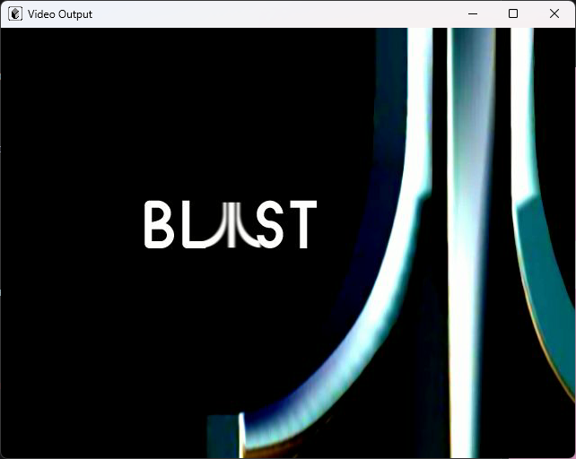

What is new
Release 1.6 shipped on 17 August 2023. Since then the emulator has grown a second user interface, a shader-based graphics pipeline, a unit-test rig for the graphics and DSP cores, a working Ethernet-enabled Linux boot and a long list of game fixes — including the Metroid Prime intro movie.
XF/TEV shaders
The fixed-function OpenGL pipeline is gone. The Flipper Transform Unit and Texture Environment Unit now run as GLSL 3.30 shaders fed by the whole register state.
340 graphics tests
A test rig runs the real CP → XF → SU → RAS → TX → TEV → PE pipeline against an OpenGL context and publishes an HTML report with hundreds of rendered reference pictures.
DSP against golden vectors
The DSP core is checked against 1822 vectors captured from the hardware, and the ARAM/AI behaviour now follows the hardware documentation.
GC-Linux boots
GQR/paired-single decoding, the MMU hash-table walk, the decrementer, mtcrf
and lswi were fixed, and a 2004 GC-Linux kernel reaches its console.
Game selector everywhere
The Win32 game selector was ported to the SDL build: banners, Game IDs, sorting, filters and jump-to-letter navigation.
More games boot
The Metroid Prime intro FMV plays, Zelda: The Wind Waker gets past its boot, Ikaruga's THP title movie has correct colours and PONG runs again.
Screenshots
Captured from the current development build (release 1.7 line).


--ipl option boots the
console menu directly, without a disc image.


gcnfb
console with the Broadband Adapter and SI drivers loaded.Build it
Windows
Open scripts/VS2022/pureikyubu.sln in Visual Studio 2022 or 2026 and
press Build. Debug and Release configurations exist for both the Win32 and the SDL
front end.
Linux
CMake + SDL2 build, verified under WSL2 as well:
sudo apt install libglew-dev
git clone https://github.com/emu-russia/pureikyubu.git
cd pureikyubu && git submodule update --init
cd build && cmake .. && make
./pureikyubu pong.dolDocumentation
Digest since 1.6
Release Notes 1.7
English release notes · Заметки о релизе на русском · Markdown
Wiki
Emulator internals: Flipper, GFX, Gekko, Debug UI and the DSP IROM analysis.